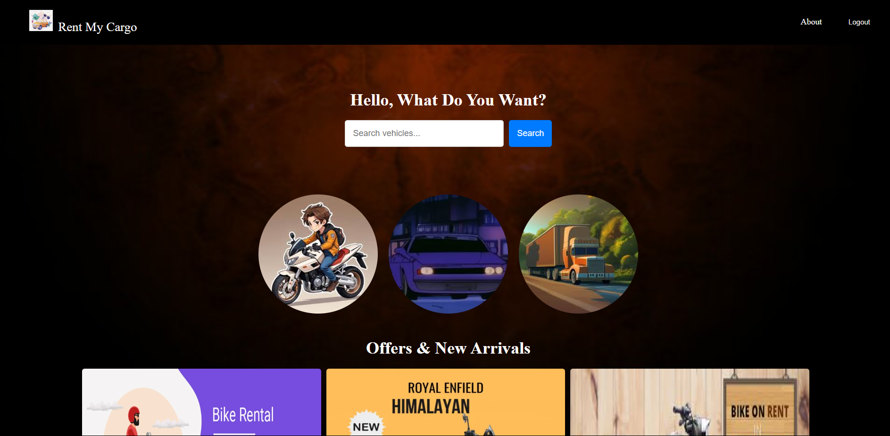
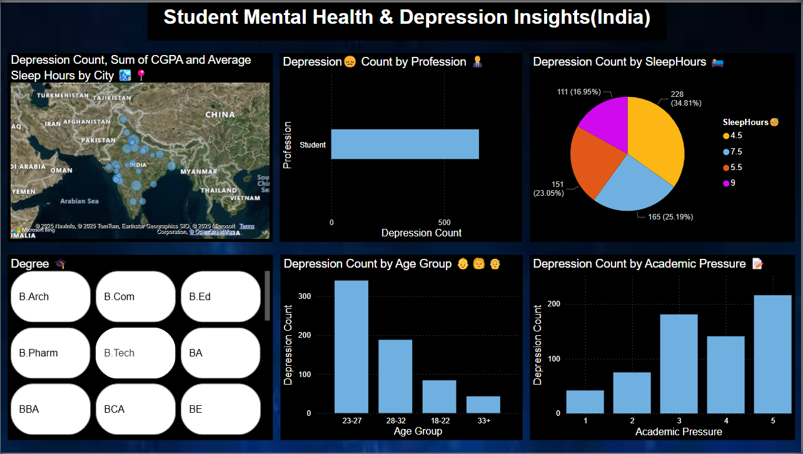
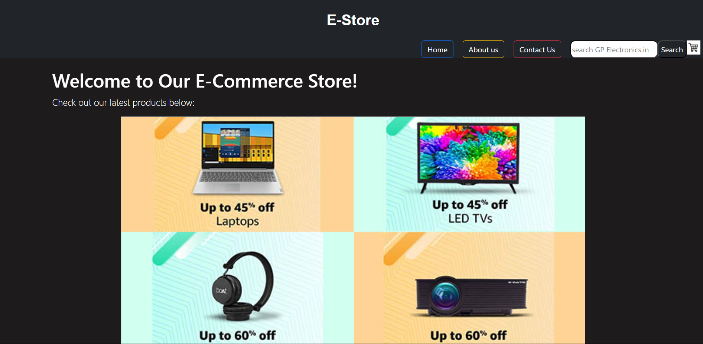
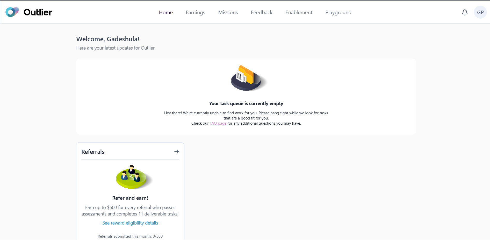
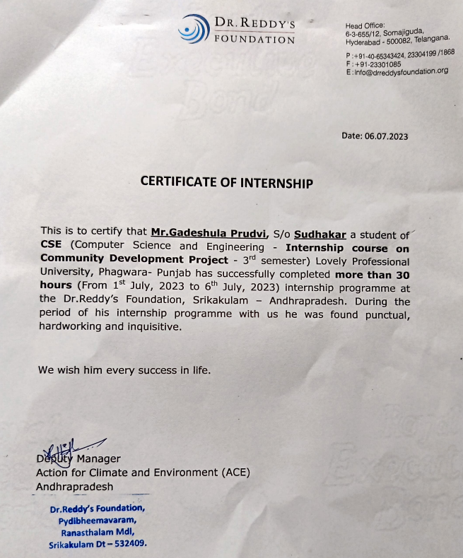

Hello, this is Prudvi passionate about full-stack web
development and data visualization....
About me:
I’m Gadeshula Prudvi from Vizianagaram, Andhra Pradesh.
I am pursuing a Bachelor's degree in Computer Science and Engineering at Lovely Professional University.
I specialize in web development, with experience in front-end and back-end technologies such as
HTML, CSS, JavaScript, React.js, and Node.js.
Additionally, I am proficient in Power BI, C++, Data Structures and Algorithms, SQL, and
Git/GitHub.
I am passionate about web development, data visualization, and continuously strive to enhance my
technical skills.Languages: Telugu, English, Hindi, German
Contact Me: +91 7032011417
Email: gadeshulaprudhvi2004@gmail.com
LinkedIn: linkedin.com/in/prudvi-gadeshula-371a2424a/
GitHub: github.com/Prudvi14
Resume: download
Education:
| 1. | Lovely Professional University | Jalandhar, Punjab | Since Aug 2022 | Computer Science and Engineering | CGPA: 7.63 |
| 2. | Narayana Junior College | Vizianagaram, Andhra Pradesh | 2020 – 2022 | Intermediate with Science | Percentage: 74.4% |
| 3. | Chanakya Public School | Vizianagaram, Andhra Pradesh | 2019 – 2020 | 10th with science | percentage: 90% |
Skills & Technologies:
| Programing Languages |  C++ C++ |
 JavaScript JavaScript |
 Python Python |
| Front-end development |  HTML HTML |
 CSS CSS |
 React JS React JS |
| Back-end development | Node Js | ||
| DataBase |  MySQL MySQL |
||
| Other | Power BI | DSA |  Git/Github Git/Github |
Projects:
1.Rent My Cargo
->Technologies used React.js, JavaScript
->Duration: Sep 2024 - Oct 2024
->Built an interactive vehicle rental platform for bikes, cars, and cargo transport using React.js, HTML, CSS, and JavaScript.
->Engineered a responsive UI with optimized performance for cross-device compatibility.
->GitHub Repository Link- https://github.com/Prudvi14/RentMyCargo

2.Student Mental Health & Depression Insights Dashboard
->Technologies used Power BI, DAX, Data Cleaning, Visualization Design
->Duration: Mar 2025 - Apr 2024
->Developed an interactive Power BI dashboard to analyze mental health trends among students using data from 2023–2025.
->The project highlights patterns and correlations related to depression, academic pressure, sleep habits, CGPA, and financial stress, aiming to promote awareness and actionable insights.
->GitHub Repository Link- https://github.com/Prudvi14/Student_depression_analysis

3.E-Store website
->Technologies used HTML, Bootstrap, CSS, JavaScript
->Duration: Mar 2024 - Apr 2024
->Designed an Electronic Store Website that allows users to purchase electronic products available on the website and add them to their cart.
->Implemented a pre-checkout summary section for users to review order details before purchase.
->GitHub Repository Link- https://github.com/Prudvi14/Prudvi14.E-store

Experience:
1.Data Annotator
->Outlier AI, Remote
->Duration: Nov 2024 - Jan 2025
->Reviewed user responses and crafted high-quality prompts for math and coding tasks, enhancing AI-generated solutions' accuracy.
->Evaluated code functionality and built assessment frameworks, improving response reliability and managing earnings conversion via AIRTM.

2.Data Analyst Intern
->Dr. Reddy`s Foundation, Srikakulam, Andhra Pradesh
->Duration: Jun 2023 - Jul 2023
->Analyzed irrigation techniques through field visits, collaborated with agricultural experts, and identified key crop management challenges.
->Gathered and preprocessed feedback data from farmers, ensuring data quality and consistency for accurate analysis, and created structured reports to support decision-making for company managers.

Certifications & Courses: